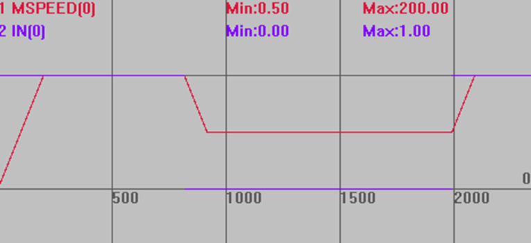

|
类型 |
轴参数 |
|
描述 |
保持输入对应的输入点编号，-1无效。
如果有输入信号，运动轴的速度由FHSPEED参数设置。当前运动没有被取消。当取消输入，过程中的运动速度返回程序速度。见例程。 输入OFF时，认为有信号输入，要相反效果可以用INVERT_IN反转电平(ECI系列控制器除外)。 此参数只适用速度控制方式(带SP后缀指令)。如果运动不是速度控制（CAMBOX，CONNECT，MOVELINK），不会起作用。 |
|
语法 |
VAR1 = FHOLD_IN，FHOLD_IN = expression VAR1 = FHOLD_IN(axisnum)，FHOLD_IN (axisnum)= expression |
|
适用控制器 |
通用 |
|
例子 |
BASE(0) '选择轴0 DPOS=0 '坐标清0 UNITS=100 ATYPE=1 ACCEL=500 '加速度为500units/s/s DECEL=500 FORCE_SPEED=200 '设置速度为200 units/s FHSPEED=200 '保持速度设为100units/s FHOLD_IN(0)=0 '轴0的保持输入设为IN0口 INVERT_IN(0,ON) '反转电平 TRIGGER '自动触发示波器 MOVESP(10000) '运动
当IN0无输入时，轴以FORCE_SPEED=200的速度运动 当IN0有输入时，轴以FHSPEED=100的速度运动，取消输入后，速度变回200
速度曲线 MSPEED(0)垂直刻度200  |
|
相关指令 |